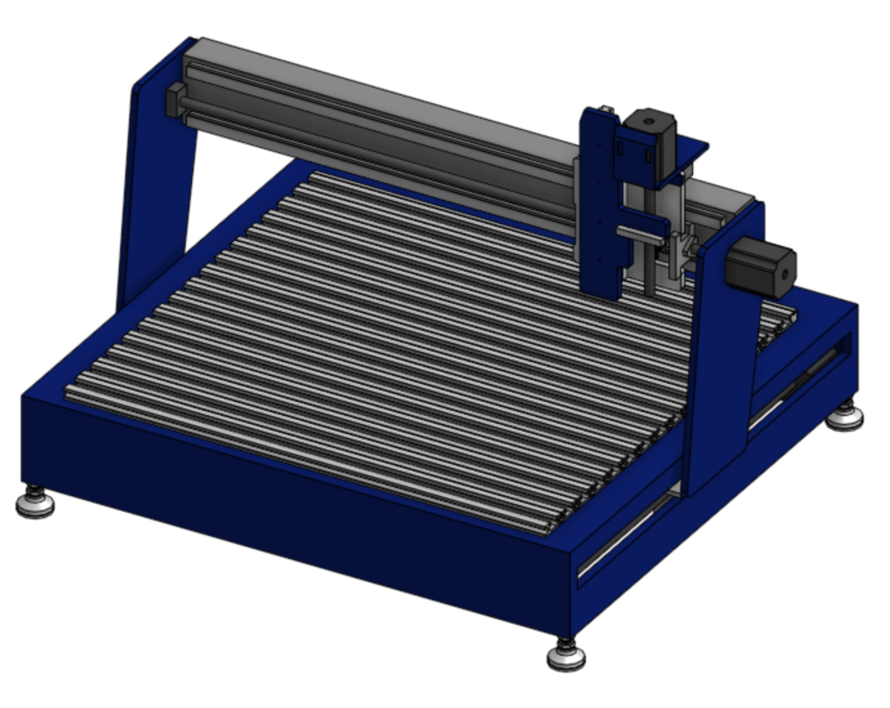
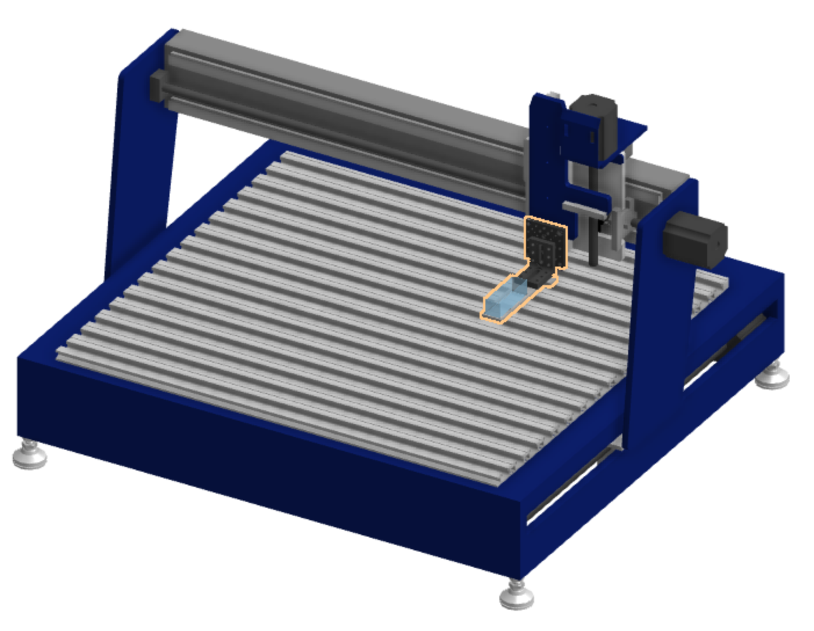
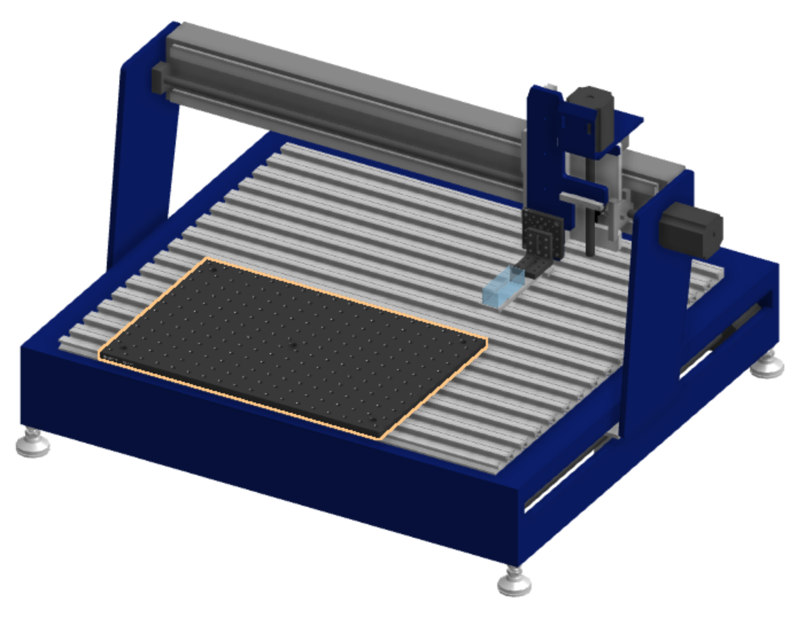
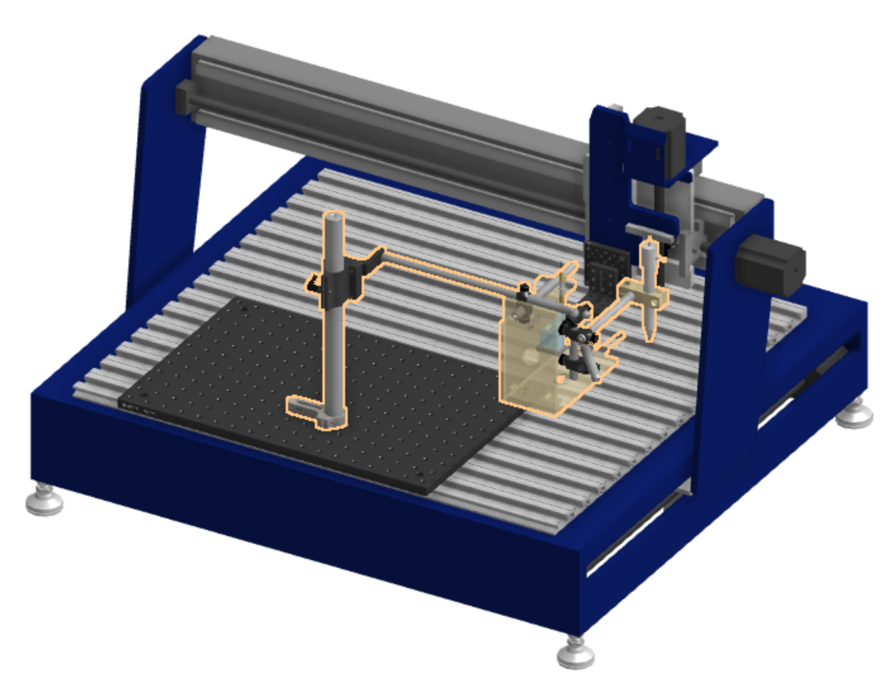
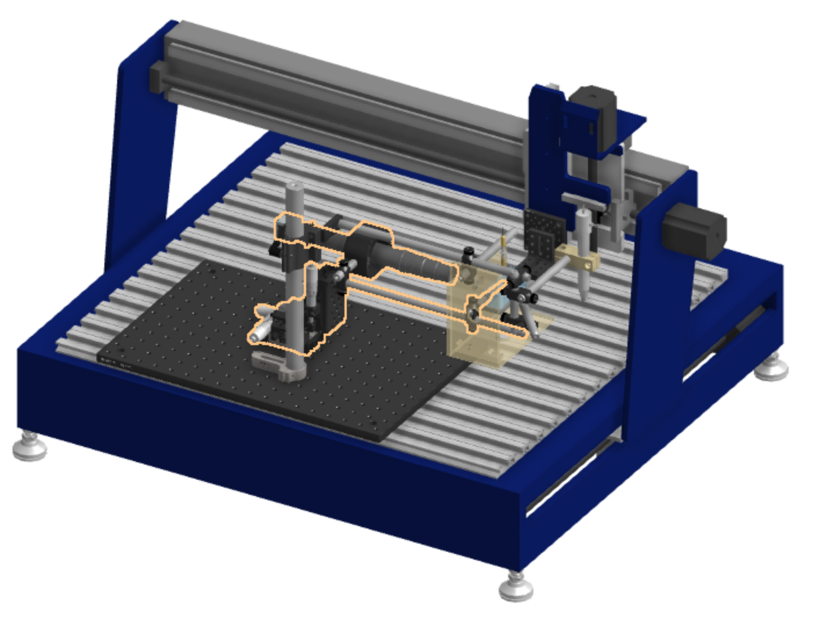
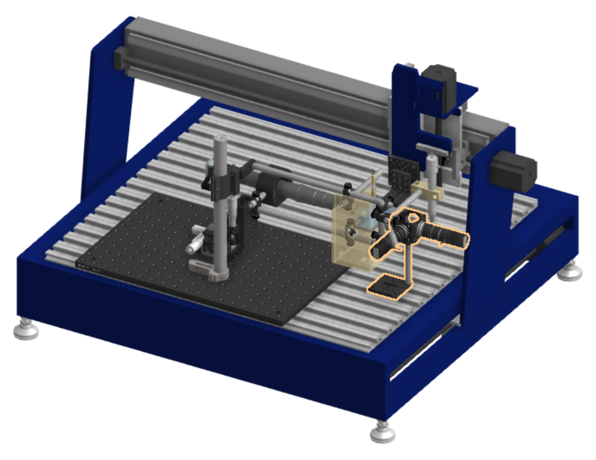
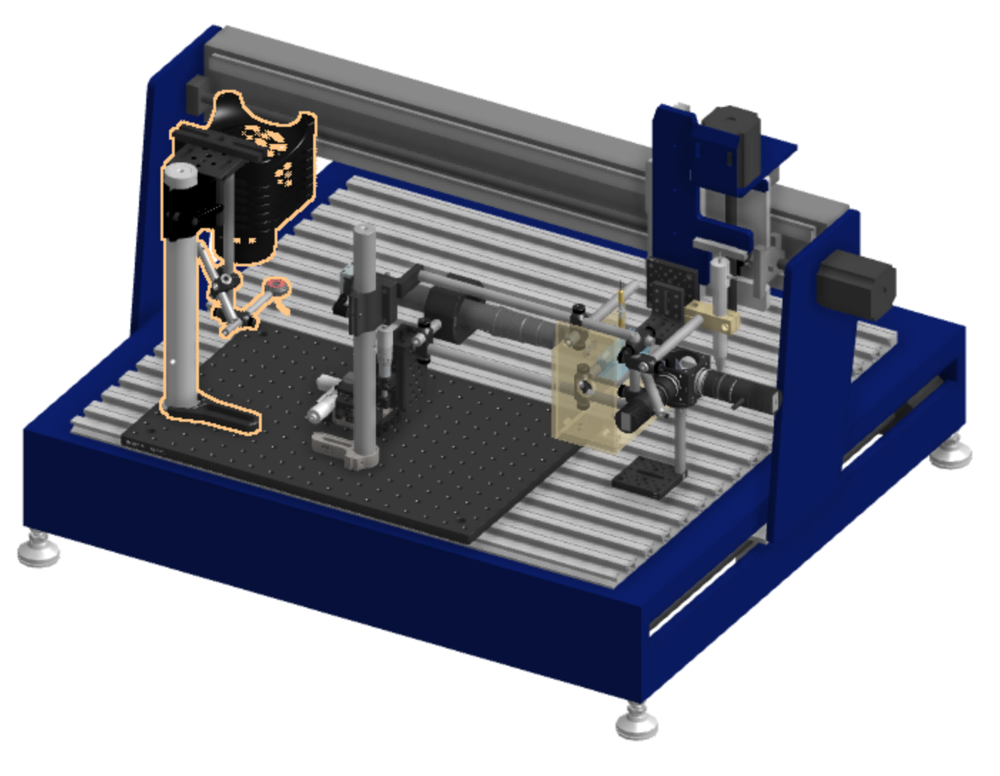
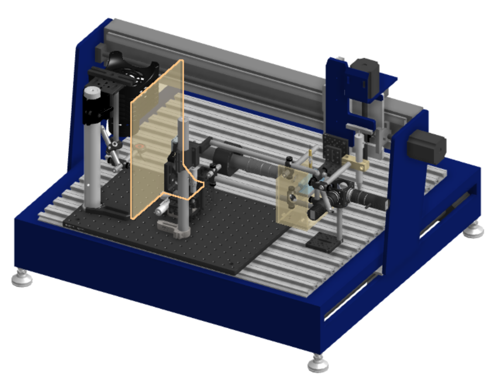
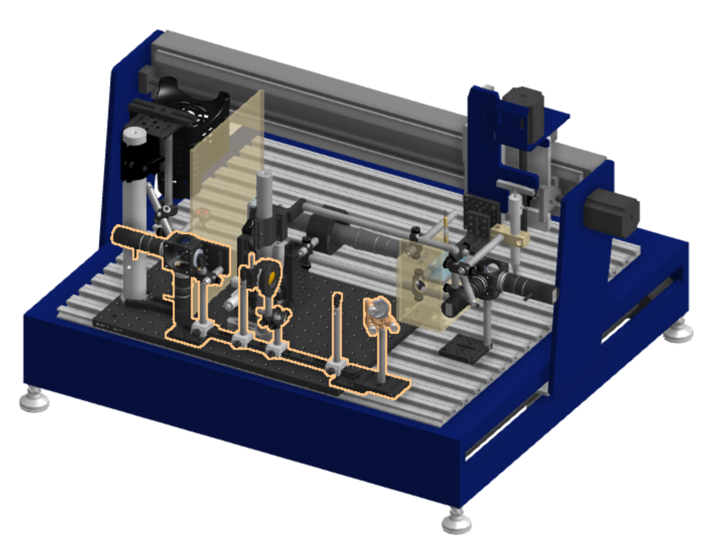

Last updated Jan 6, 2022 by Leanne Friedrich
Certain commercial equipment, instruments, or materials are identified in this user guide in order to describe a specific device. Such identification is not intended to imply recommendation or endorsement by the National Institute of Standards and Technology, nor is it intended to imply that the materials or equipment identified are necessarily the best available for the purpose.
Hardware || Parts list || Stage || Nozzle || Imaging || UV curing || Enclosure
| 0. Begin with a Shopbot Desktop CNC mill. Remove the drill and extraneous plates that are only needed for the drill. Remove the wooden cutting platform from the Shopbot base. |  |
| 1. Add the stage to the drill plate. It is easiest to do this in reverse of the elements listed in Stage assembly. |  |
| 2. Use the screws included with the cutting platform to add a breadboard to the base of the Shopbot. This will make it easy to add additional features. |  |
| 3. Mount the nozzle assembly on the breadboard. It may be easier to add elements in reverse order of how they are mentioned in Nozzle assembly |  |
| 4. Mount the camera assembly on the breadboard. The camera should be positioned so it is focused on the nozzle, through the splatter shield. |  |
| 5. If using backlighting, mount the backlighting assembly on the platform. The backlight assembly should be positioned so it evenly illuminates the camera field of view. |  |
| 6. Mount the UV illumination assembly at the far left edge of the platform. |  |
| 7. Mount the UV light blocker between the illumination assembly and the camera. |  |
| 8. If using sheet illumination, mount the sheet illumination assembly at the front of the platform. The mirror should be aligned so it illuminates the nozzle through the hole in the splatter shield. |  |
| 9. Add foil or plastic film to the bottom platform and cover any sensitive equipment. This can protect the equipment from spills and splashes and allow for easier clean-up. | |
| 10. Build the enclosure. | |